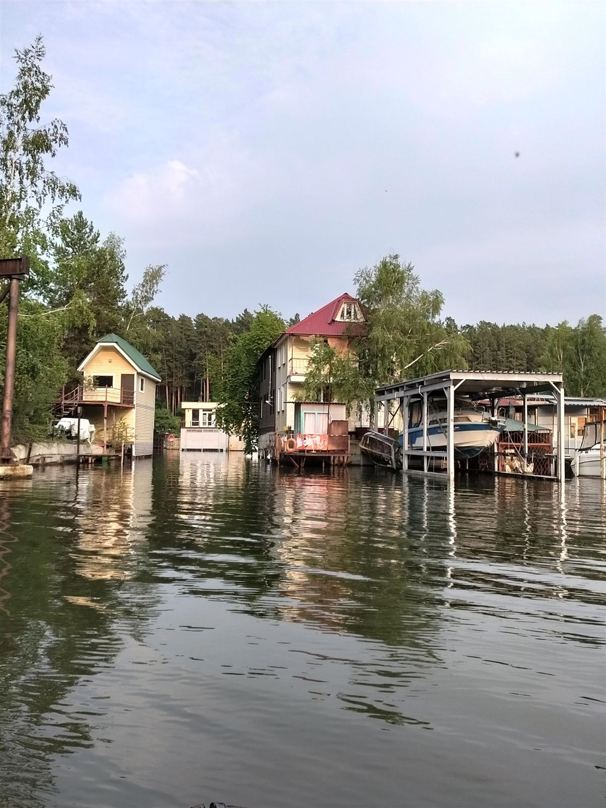
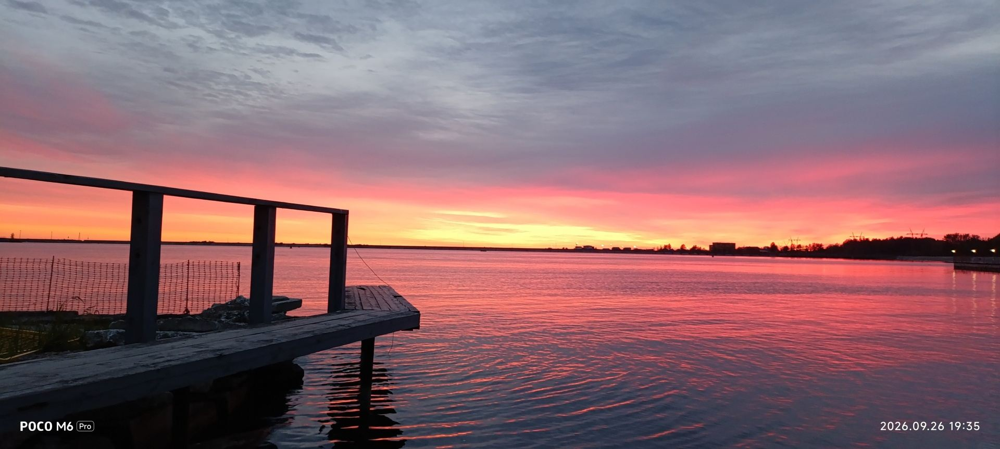
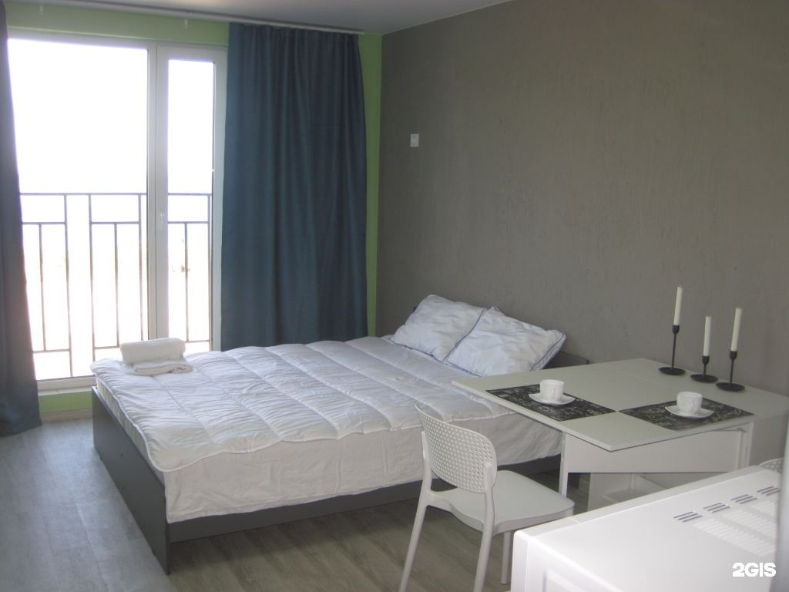
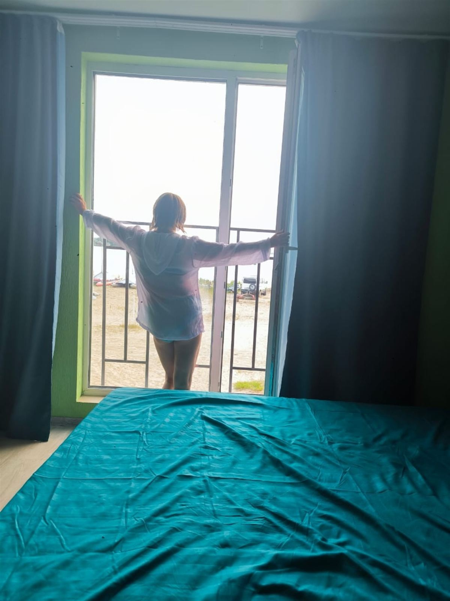
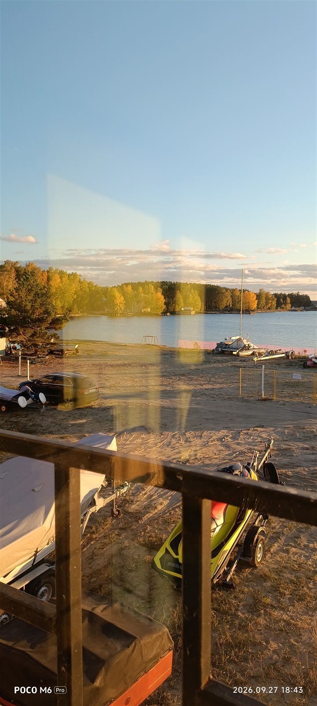
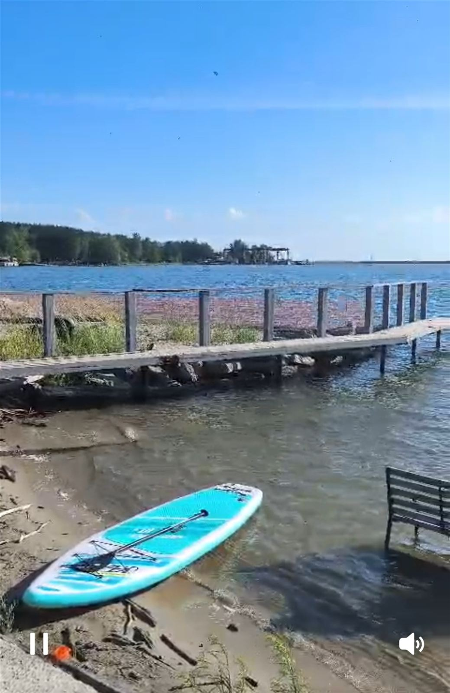
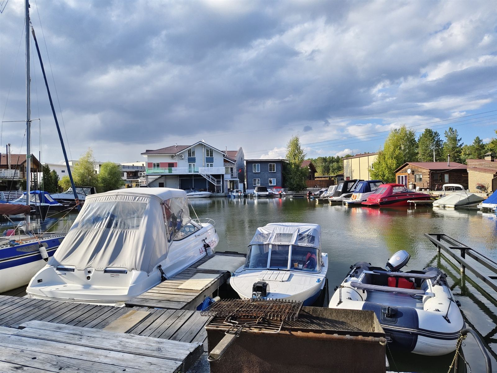
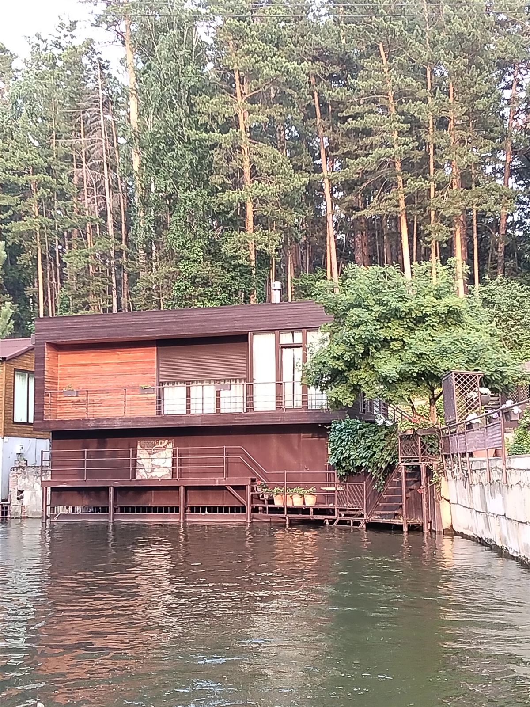

Прогулки на катере
Хозяин Аркадий покажет Обское море и «местную Венецию» — каналы с домиками прямо на воде.

Новосибирск · Обское море
Девять уютных номеров с видом на воду, свой песчаный пляж, русская баня у самой воды и прогулки на катере. Море — в черте города.
Номера
Номера с новой мебелью и всем необходимым для отдыха. Из панорамных окон — вода и закаты над Обским морем. Напротив — заводь, где тренируются яхтсмены, рядом сосновый лес.



На воде
Свой небольшой пляж с песком и хорошим входом в воду. Рядом пляж «Звезда» и сосновый лес. Всё для воды — на месте.

Хозяин Аркадий покажет Обское море и «местную Венецию» — каналы с домиками прямо на воде.

Берите на прокат и выходите на воду прямо с пляжа.

Прокат водной техники — договоритесь с хозяевами заранее.
Зимой тоже работаем. Гости приезжают и зимой — кататься на снегоходах.

Баня
«Старинная русская баня, в 3 метрах от воды. Как говорится, с парилки сразу в воду. Рекомендую!»Никита Шмелёв, отзыв в 2ГИС
Попариться — и сразу в Обское море. Стоимость и свободное время — у хозяев.
Спросить про банюБронирование
Сообщение уйдёт хозяевам с датами и пожеланиями. На летние выходные лучше написать заранее.
Или позвоните: +7 964 095-47-17
Фото гостей
Отзывы
Приветливые хозяева, готовые решить любые вопросы, чистый небольшой пляж с песочком и хорошим входом в воду. Вид из панорамного окна на море очень порадовал глаз, можно взять напрокат спортивный инвентарь и прокатиться на моторке с ветерком.
Большое спасибо Аркадию, прокатил по Обскому водохранилищу, показал красивые места, мы в восторге, всем рекомендую! Особенно впечатлила местная Венеция!
Отличное место для отдыха у моря Обского. Добрые, приветливые, внимательные к своим гостям хозяева. Было всё настолько хорошо, что я приехала ещё раз и ещё раз — и теперь не только летом, но и зимой.
Отдыхали с мужем и ребёнком в августе. Номера уютные, хозяева приветливые. Недалеко пляж «Звезда», где можно получить дополнительные эмоции. В следующем году обязательно будем.
Шикарное место! Не думала даже, что есть такие в Новосибирске. Красиво, тихо. Обалденный морской воздух! В номере всё есть. Чисто и комфортно.
Понравилось всё, начиная от номеров до отношения хозяев. Такое гостеприимство редко встретишь. Место отличное и чтобы погулять и насладиться природой, и чтобы провести активные выходные.
Русская улица, 42Б к2 — Советский район Новосибирска, на берегу Обского водохранилища. Своя парковка, по договорённости — трансфер.
Да, к нам приезжают семьями. У дома небольшой песчаный пляж с хорошим входом в воду.
Да, круглый год. Зимой гости приезжают кататься на снегоходах.
От 3 300 ₽. Точную цену назовём под ваши даты и количество гостей — напишите в WhatsApp.
Наличными или переводом с карты.
Контакты
Русская улица, 42Б к2
Новосибирск, Советский район, берег Обского моря